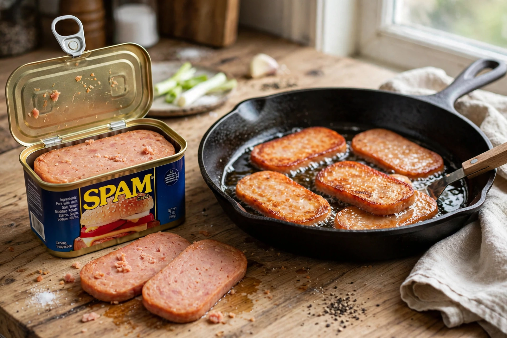

Spam (food)
From Wikipedia, the free encyclopedia

Spam is a canned cooked pork product made by Hormel Foods, launched in 1937: pork shoulder and ham ground with salt, water, sugar, potato starch and sodium nitrite, cooked in the can. Its name — chosen in a naming contest won by actor Kenneth Daigneau — is usually explained as a contraction of "spiced ham", though Hormel long kept the etymology playfully vague. A Depression-era shelf-staple became a Second World War phenomenon: shipped in vast quantities to American GIs and Allied civilians, it took root wherever the war had passed — Hawaii, Guam, Okinawa, the Philippines and South Korea, where it remains prized, even a gift item.
The Pacific afterlife
Spam's second life is its real story. In Hawaii, which eats more Spam per person than anywhere else, it is breakfast (with eggs and rice), musubi (grilled Spam on rice, bound with nori), and festival fare — Waikiki's Spam Jam draws crowds yearly. In South Korea, introduced through US army bases and stewed into budae-jjigae ("army base stew") during postwar scarcity, Spam became a holiday-gift-box prestige item. The Philippines fries it for spamsilog breakfasts. Scarcity food became comfort food became heritage.
From sketch to slang
In 1970 a Monty Python sketch set in a café where every dish contains Spam, and a chorus of Vikings drowns all conversation by chanting its name, gave the word its second meaning: in the 1990s, repetitive junk messages on Usenet and then email were dubbed "spam" in the sketch's image — unwanted, ubiquitous, inescapable. Few brand names have colonised the language twice. Spam itself, meanwhile, sells steadily in dozens of varieties (Lite, with bacon, with Tocino seasoning), its museum standing in Austin, Minnesota, near the plant that still makes most of it.